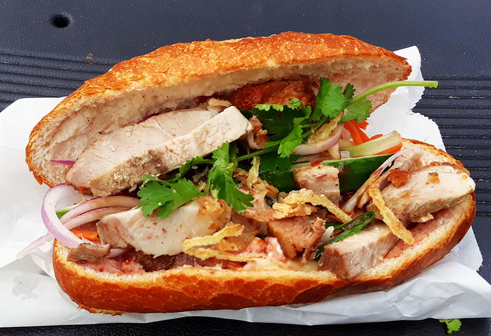

Banh Mi Recipe
Home

[food] Banh Mi” by David Jackmanson, CC BY 2.0
Description
This bánh mì (Vietnamese sandwich) is made with chicken and full of pickled vegetables.
Even though we will be using chicken as the protein in this recipe, you are free to use any protein you like.
Some alternatives are pork, ham, tofu, and mushroom.
Give this recipe a try. Small warning, though, you may get addicted to bánh mì and make this every other day like I do!
Ingredients
- ½ cup rice vinegar
- ¼ cup white sugar
- ¼ cup water
- ¼ cup matchstick-cut carrots
- ¼ cup peeled and matchstick-cut daikon radish
- ¼ cup thinly sliced white onion
- 1 skinless, boneless chicken breast half
- 1 pinch garlic salt, or to taste
- ground black pepper to taste
- 1 (12 inch) French baguette
- 4 tablespoons mayonnaise
- ¼ cup thinly sliced cucumber
- 1 tablespoon fresh cilantro leaves
- 1 small jalapeño pepper, cut into 1/16-inch-thick matchsticks
- 1 wedge lime